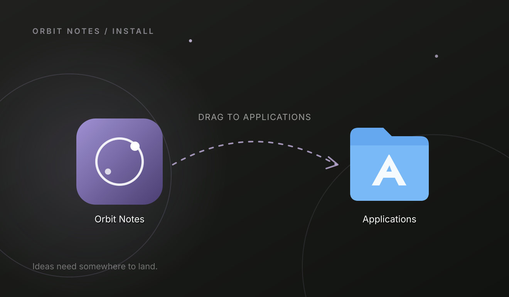
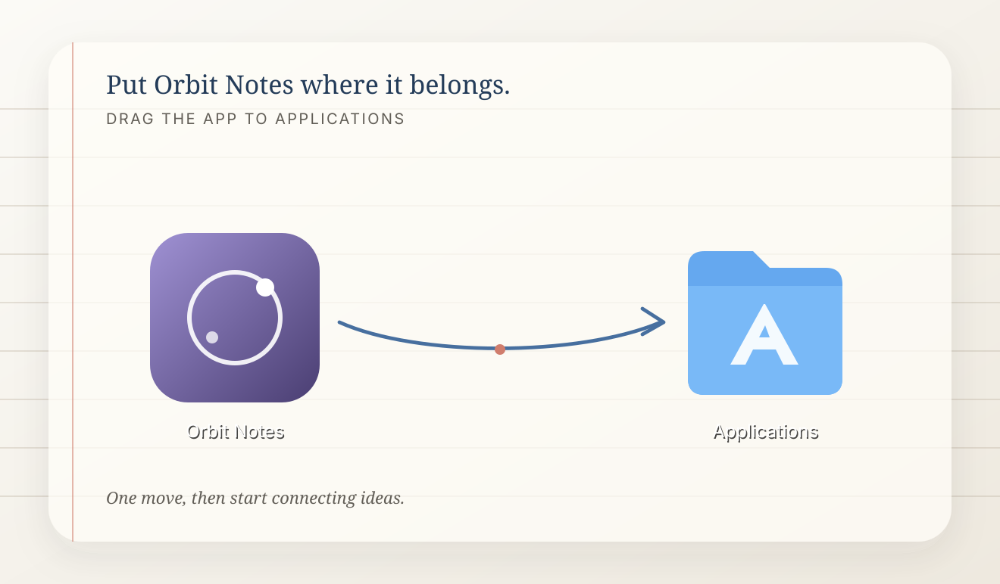
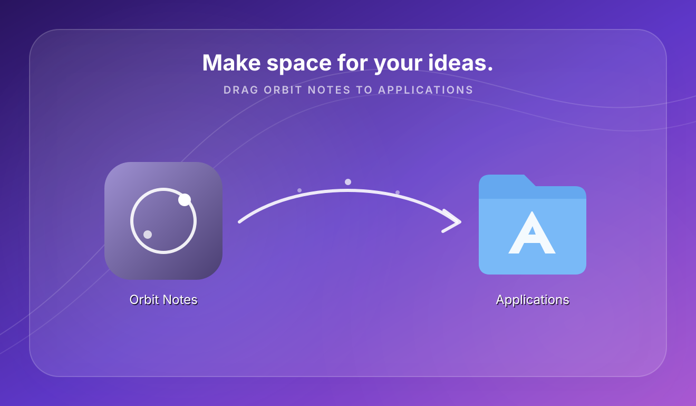

1
Quiet Orbit
A restrained night field carries Orbit Notes' spatial metaphor without competing with the Finder items.
Three distinct installer directions. Choose one before refinement and build.

A restrained night field carries Orbit Notes' spatial metaphor without competing with the Finder items.

A warm ruled workspace connects installation to the product's writing and card-based experience.

A vivid launch surface turns the install moment into a burst of connected ideas while preserving clear icon zones.